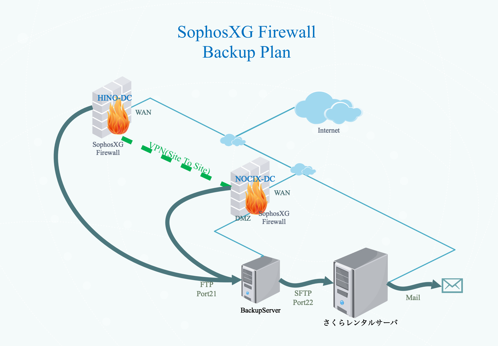

バックアップ構成概要

各拠点のSophosXGのコンフィグのバックアップを次の３箇所に日次で作成する。
- バックアップサーバ
- さくらレンタルサーバ
- 管理用メールボックス
バックアップは下記の要項で実施する。
- SophosXG標準機能で、日次でバックアップへFTPでアップロードする。
- バックアップサーバもSophosXG影響下にいる為、SophosXGのコンフィグをさくらレンタルサーバへもアップロードする。（バックアップサーバ上のCronでSFTPでバックアップするシェルスクリプトを実行）
- さくらレンタルサーバのメールサーバを使い、圧縮したSophosXGのコンフィグをメールで送付する。
バックアップ構成設定値
SophosXG設定値
| 項目 | 設定値（NOCIX-DC） | 設定値（HINO-DC） |
|---|---|---|
| バックアップモード | FTP | FTP |
| バックアップのプレフィックス | NOCIX | HINO |
| FTPサーバのIP | 172.16.16.99 | 172.16.16.99 |
| ユーザー名 | localadm | localadm |
| パスワード | *************** | *************** |
| FTPパス | glanz | glanz |
| 頻度 | 毎日 | 毎日 |
| スケジュール | 00:00 | 00:00 |
バックアップサーバ
| 項目 | 設定値 | 備考 |
|---|---|---|
| SophosXGコンフィグ格納ディレクトリ | /home/localadm/glanz/ | - |
| バックアップ保管日数 | 6ヶ月 | - |
| さくらレンタルサーバへのアップロード用バッチ | /root/scripts/DAILY_BACKUP_SCRIPT.sh | - |
| SophosXGコンフィグ送信先メールアドレス | shinji@k636174.net | - |
| その他 | Cron設定状況は【バックアップサーバ】を参照 |